< 8 Min
Avg Wait Time99.4%
Resolution Rate24/7
UK Doctor AccessNext-Generation UK Virtual Hospital
Combining Harley Street clinical excellence with cloud telemetry so you receive hospital-grade specialist care anywhere in the UK.
Virtual Specialist Hours
- Monday - Friday (HD Consults) 06:00 - 23:00
- Saturday (Specialist Clinics) 07:00 - 22:00
- Sunday & Bank Holidays 08:00 - 21:00
Emergency Tele-Triage
- Urgent GP Video Triage 24 Hours / 7 Days
- Remote Cardiac ICU Telemetry Continuous 24/7
- Direct Hotline (+91 9876543210) Always Active
Why Patients Choose Stackly Telemedicine?
Traditional clinic appointments often mean weeks on waiting lists, crowded waiting rooms, and travel stress. Stackly Telemedicine eliminates barriers by bringing senior UK hospital consultants directly to your smartphone, tablet, or desktop.
Our integrated platform synchronizes with FDA and CE-approved home blood pressure monitors, 12-lead ECG patches, digital otoscopes, and continuous glucose sensors—allowing your doctor to examine real-time clinical data during your live session.
- Zero Waiting Room Exposure
- Instant NHS & Private Sick Notes
- Direct MRI & Blood Test Referrals
- Multi-Device Family Health Vault
- CQC-Regulated Clinical Governance
- Transparent Fixed Consultation Fees
How Virtual Care Works in 4 Steps
From symptom check to doorstep medication delivery, our end-to-end digital pathway takes less than 15 minutes.
Create Health Profile
Register in 60 seconds, log your symptoms, and upload any prior lab reports or wearable health metrics.
Select UK Specialist
Choose an immediate on-demand GP slot or schedule a dedicated session with a senior consultant.
4K Video Consultation
Discuss your health face-to-face over encrypted HD video while sharing real-time vitals with your doctor.
E-Script & Recovery
Download your clinical care plan, digital prescription barcode, and automated follow-up reminders.
Our Telemedicine Departments
Switch between our specialized virtual departments to explore remote diagnostics, connected device protocols, and specialist care pathways.
- TELE-CARDIOLOGY
- TELE-NEUROLOGY
- DERMATOSCOPY
- PEDIATRICS
- PULMONOLOGY
- AI DIAGNOSTICS
Welcome to TELE-CARDIOLOGY
Our Tele-Cardiology unit monitors patients with hypertension, atrial fibrillation, and post-interventional heart recovery using wearable 12-lead ECG patches and Bluetooth blood pressure cuffs.
Abnormal rhythm alerts are transmitted instantaneously to our Harley Street cardiac command desk, enabling proactive medication titration and rapid intervention before complications occur.
- Continuous 7-Day Holter Sync
- Remote Hypertension Clinics
- Instant Arrhythmia Triage
- Post-Angioplasty Video Care
Welcome to TELE-NEUROLOGY
Manage chronic migraines, epilepsy, neuropathy, and post-stroke rehabilitation through structured video neurological assessments and cloud-shared MRI/CT neuroimaging review.
Our consultant neurologists track digital seizure diaries, cognitive response scores, and sleep architecture data to personalize your long-term neurological therapy.
- Migraine & Headache Clinic
- Epilepsy Medication Review
- Cloud MRI Second Opinions
- Post-Stroke Speech Rehab
Welcome to DERMATOSCOPY CARE
Upload macro photos or connect a clip-on smartphone dermatoscope for rapid evaluation of moles, eczema, psoriasis, rosacea, and acne by UK consultant dermatologists.
Receive custom prescription topical formulations dispatched straight to your home and track visible skin clearing week-by-week in your secure patient portal.
- AI-Assisted Mole Mapping
- Custom Acne & Rosacea Plans
- Eczema Flare Triage in 2 Hrs
- Hair & Scalp Trichology
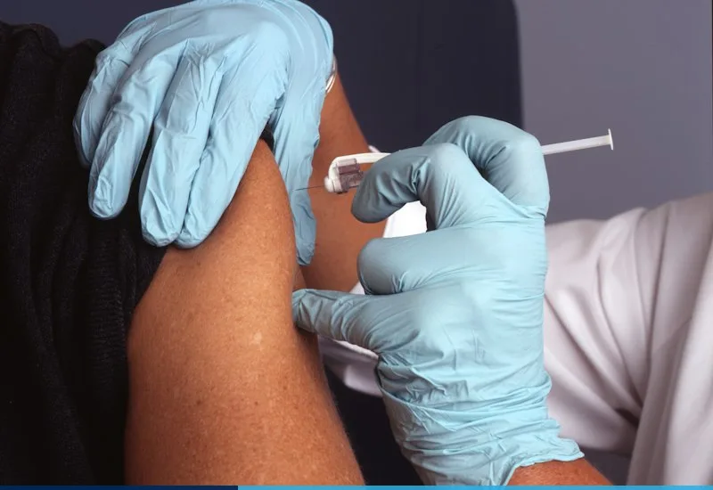
Welcome to VIRTUAL PEDIATRICS
When your child develops a sudden fever, rash, earache, or croup at midnight, our pediatricians are online within minutes to guide parents calmly and accurately.
Compatible with home digital ear otoscopes and non-contact thermometers, giving parents peace of mind without late-night trips to urgent care centers.
- 24/7 Pediatric Fever Triage
- Infant Nutrition & Allergy
- Home Otoscope Ear Checks
- Developmental Milestones
Welcome to TELE-PULMONOLOGY
Breathe easier with connected Bluetooth spirometers, smart inhaler adherence sensors, and overnight pulse oximetry for asthma, COPD, and sleep apnea management.
Our respiratory specialists review your FEV1 lung capacity curves remotely and adjust inhaler therapy proactively during seasonal pollen or winter triggers.
- Home Bluetooth Spirometry
- Asthma & COPD Action Plans
- Home Sleep Apnea Studies
- Post-Viral Lung Recovery
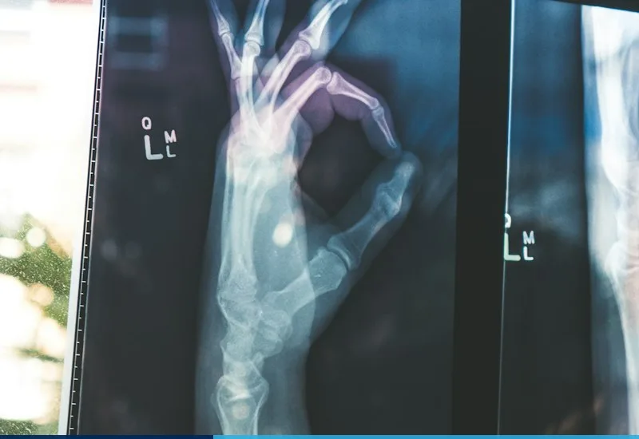
Welcome to AI DIAGNOSTICS
Upload DICOM X-ray, CT, or MRI scans for sub-specialist UK radiologist reporting within 60 minutes, augmented by deep-learning anomaly detection.
We also dispatch home finger-prick blood biomarker kits and nurse phlebotomy visits across the UK, syncing lab results directly to your video consultation.
- 1-Hour Radiology Reports
- Home Blood Biomarker Kits
- Second-Opinion Tumor Board
- Genetic & Metabolic Panels
Real-Time Remote Patient Monitoring (RPM)
Our cloud telemetry engine pairs effortlessly with Apple Watch, Fitbit, Withings, Omron, and clinical-grade medical sensors. Your vital signs stream securely to our 24/7 clinical triage desk with automated early-warning thresholds.
12-Lead Patch ECG
Continuous beat-by-beat arrhythmia & QT interval cloud telemetry.
Smart BP Telemetry
Cellular blood pressure cuffs that sync automatically without Wi-Fi setup.
Continuous Glucose (CGM)
24/7 interstitial glucose trends shared live with our endocrinologists.
SpO2 & Spirometry
Overnight oxygen saturation & peak expiratory flow tracking.
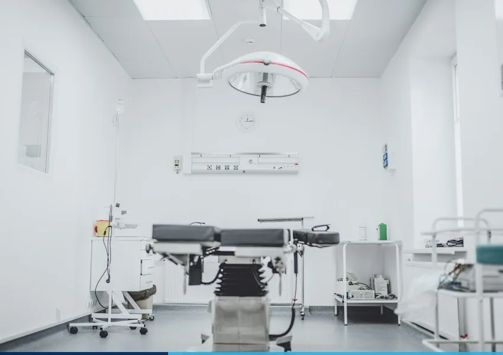
Book Your 4K Virtual Consultation
Schedule a video consultation with any of our UK board-certified specialists. Fill in all required fields below and you will receive an encrypted video link via SMS and email within 2 minutes.
Direct Booking Line
+91 9876543210
Clinical Triage
info@stacklytelemed.co.uk
Patient Tele-Booking Form
All fields are required. Name accepts letters only; Phone accepts numbers only; Past dates are restricted.
Our Experienced Tele-Specialists
Every specialist is GMC-certified and available for encrypted one-on-one video consultations and ongoing remote patient monitoring.
Before & After Remote Care Gallery
Drag the interactive comparison handle on each clinical case below to inspect baseline remote triage versus post-treatment outcomes.
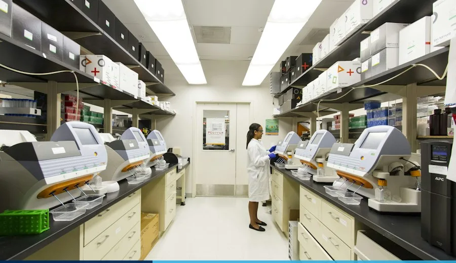
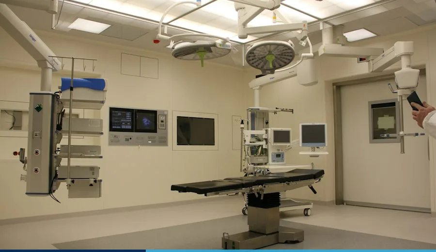
Case #104: HD Teledermatology & Custom Prescription
6-week remote dermatological therapy with bi-weekly macro photo check-ins and automated prescription refinement.
Case #219: AI Motion-Tracked Post-Op Tele-Physiotherapy
Computer-vision guided joint angle tracking and daily virtual physiotherapist coaching from home.
View Our Telemedicine Gallery
Filter our clinical telemetry suites, home diagnostic kits, and 4K consultation pods. Click any item to zoom in full screen.
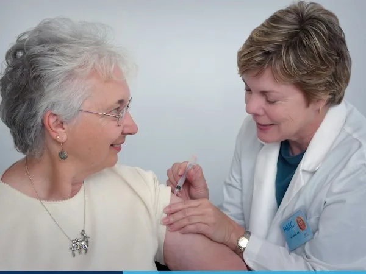
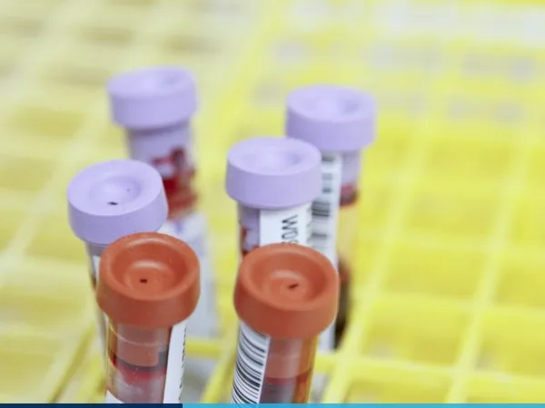
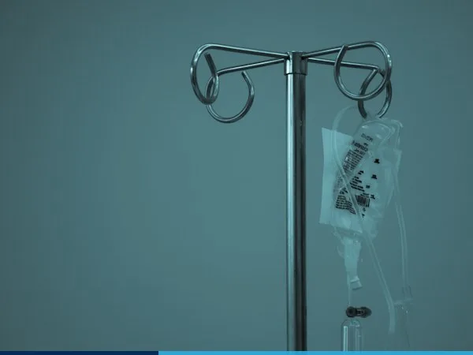
What Patients Say About Us
Rated 4.96 / 5 across 14,200+ verified UK virtual consultations for clinical accuracy, speed, and compassionate follow-up.
"My wearable ECG patch flagged an irregular rhythm at 11 PM. Dr. Sterling reviewed my live trace on a 4K video call within 6 minutes and adjusted my medication immediately. Truly life-saving technology."
"When our 4-year-old spiked a fever on Sunday evening, Dr. Thorne examined his ear via our home digital otoscope on video and sent an e-prescription to our local 24-hour pharmacy in 10 minutes."
"Living in the Scottish Highlands made seeing a specialist neurologist an all-day journey. With Stackly Telemedicine, I review my brain scans and migraine regimen from home in crystal-clear HD."
18+
Years Digital Care Experience
45,000+
Virtual Consults Completed
220+
GMC Certified Tele-Doctors
980+
UK Partner Pharmacies
Telemedicine Pricing Plans
No hidden clinic fees. Choose single pay-as-you-go video consultations or comprehensive family & chronic care memberships.
£39
/ visitExpress GP Video
- 20-Min 4K Video Consultation
- Instant Digital E-Prescription
- Official Fit-to-Work / Sick Note
- 48-Hour Chat Follow-Up
- PDF Clinical Care Summary
£85
/ consultSpecialist Consult
- 40-Min Senior Consultant Call
- DICOM MRI / CT Scan Review
- Specialist E-Prescription
- Direct Lab & Imaging Referral
- 7-Day Direct Clinician Messaging
£119
/ monthFamily Care 365
- Unlimited 24/7 GP Video Calls
- Covers Up to 2 Adults & 3 Kids
- Free Digital Otoscope Kit
- Priority Pediatric Night Triage
- Free UK Prescription Delivery
£149
/ monthChronic RPM Suite
- 24/7 ECG & BP Cloud Telemetry
- Connected Cellular Vitals Kit
- Monthly Specialist Video Review
- Quarterly Home Blood Panel
- Dedicated Nurse Care Manager
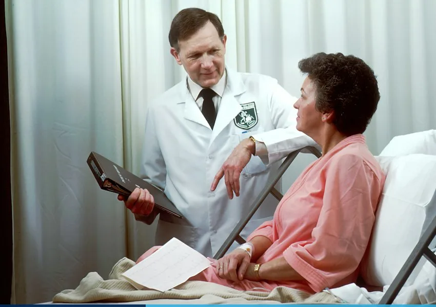
Frequently Asked Questions
How quickly can I see a UK doctor on video?
How do digital prescriptions work after my video call?
Are my video consultations and medical records private?
Can I sync my Apple Watch or home blood pressure monitor?
Latest Telemedicine News
Evidence-based guides on remote patient monitoring, wearable diagnostics, and virtual healthcare written by our UK medical board.
How Continuous Wearable ECG Telemetry Prevents Silent Cardiac Events
Discover how AI-assisted 12-lead wearable patches and real-time cloud cardiology triage detect paroxysmal atrial fibrillation weeks before conventional clinic holter tests.
5 Ways to Prepare for Your First 4K Specialist Video Consultation
Lighting, camera placement, and syncing your home vitals for a seamless virtual examination.
Managing Hypertension from Home with Cellular Blood Pressure Cuffs
Why morning and evening home readings eliminate white-coat syndrome and improve dosing accuracy.
Electronic Repeat Dispensing & Same-Day UK Pharmacy Dispatch Explained
How cryptographic barcode tokens connect your virtual consultation to 980+ UK pharmacies.
Get In Touch With Us
Have questions about virtual consultations, corporate telehealth plans, or home diagnostic devices? Message our London command hub.
UK Flagship Command Hub
UK Location
221B Harley Street, Marylebone, London W1G 9QT, United Kingdom
24/7 Tele-Hotline
Official Email
Clinical Accreditation
CQC Registered • NHS Digital Partner • ISO 27001 Certified
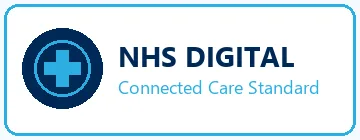
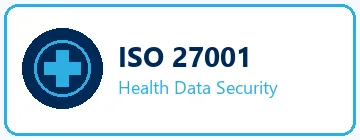
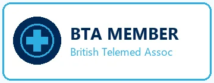